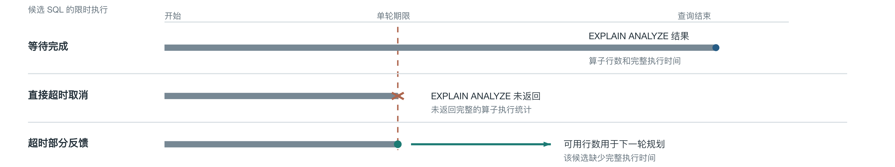
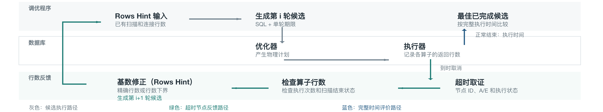
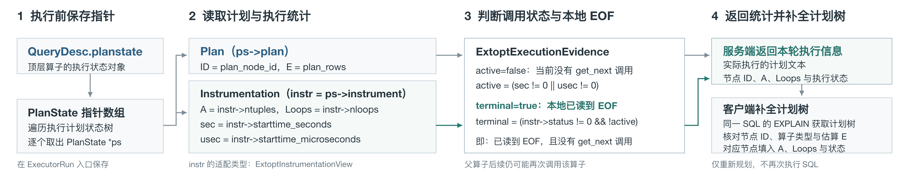
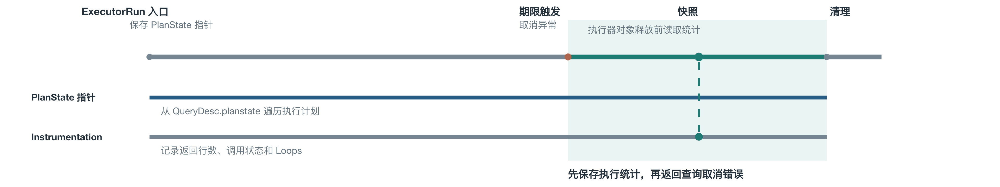
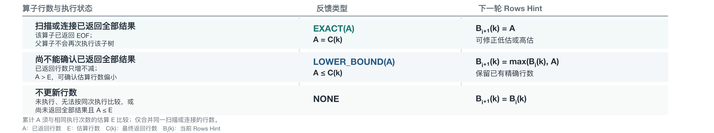
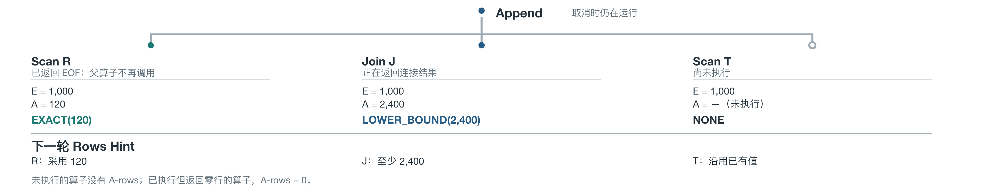
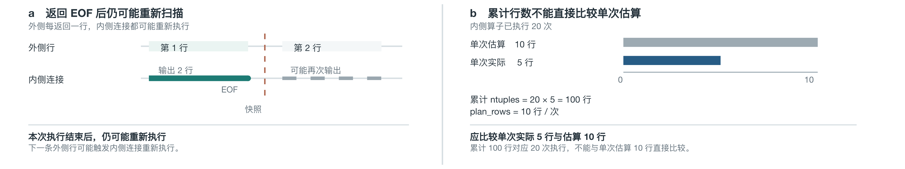
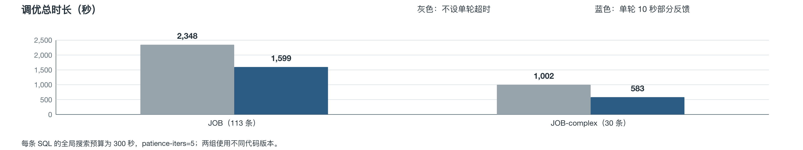
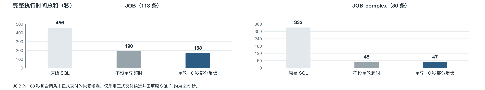

超时执行反馈：9 张配图及 PPT
图 1：候选 SQL 的限时执行



图 2：超时执行统计如何更新 Rows Hint



图 3：读取 GaussDB 算子执行统计



图 4：执行器对象释放前读取统计



图 5：选择可反馈的行数并更新 Rows Hint



图 6：超时执行中的三种算子状态



图 7：再次扫描与累计行数的比较



图 8：调优总时长


图 9：完整执行时间总和
